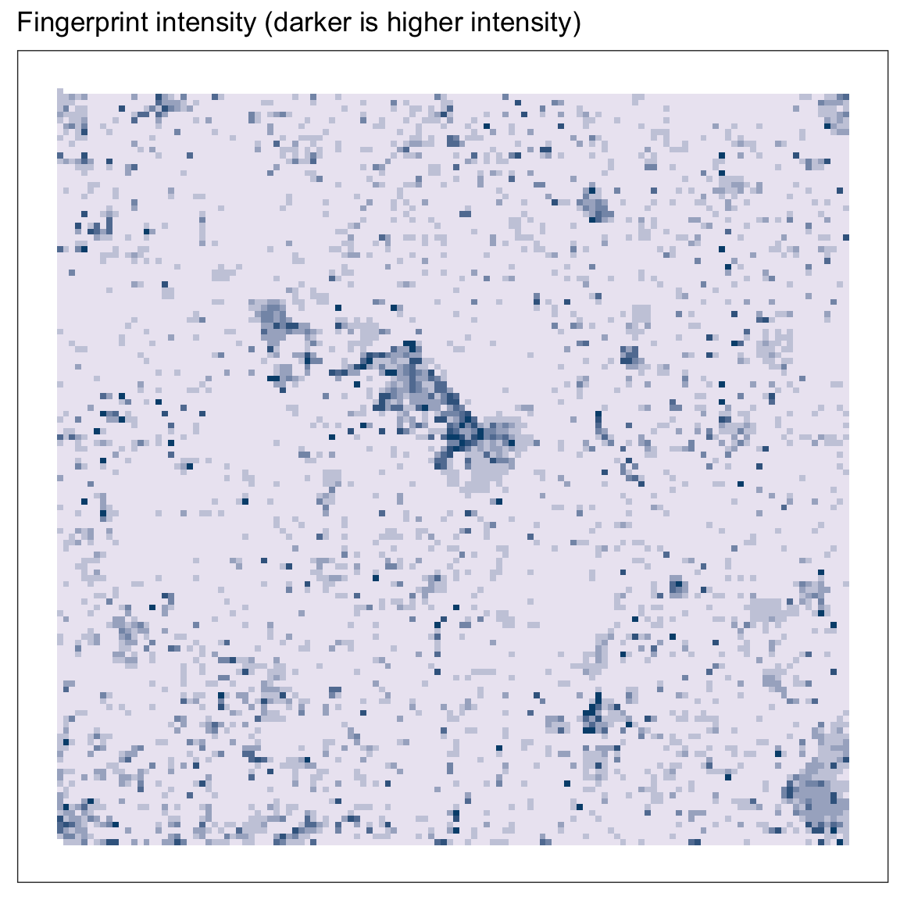
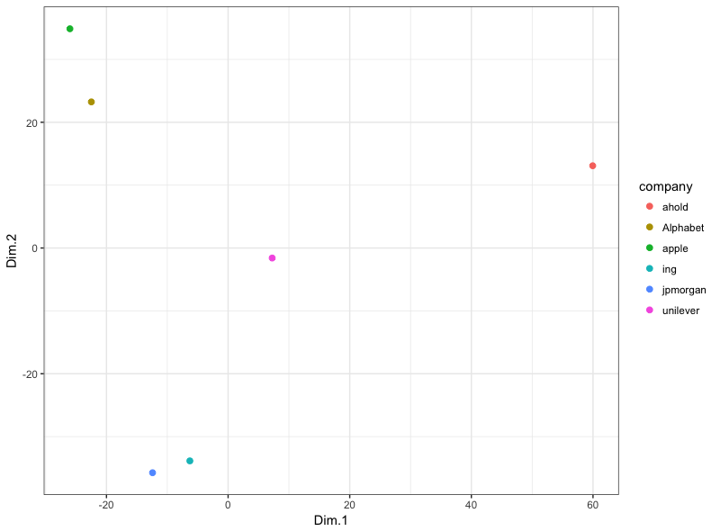
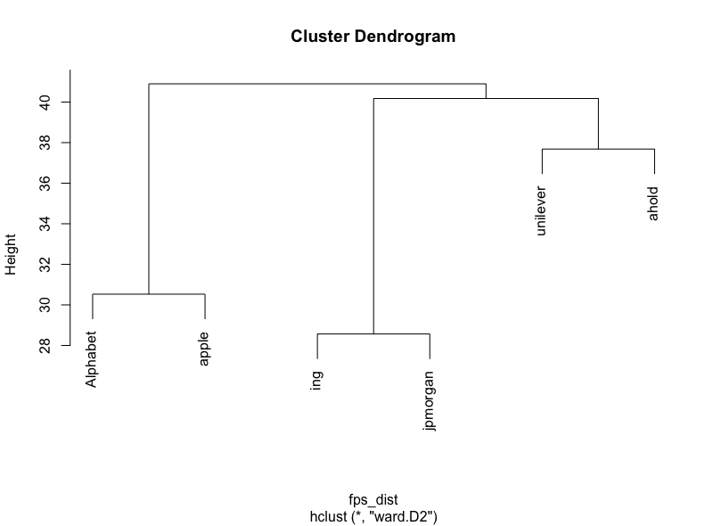
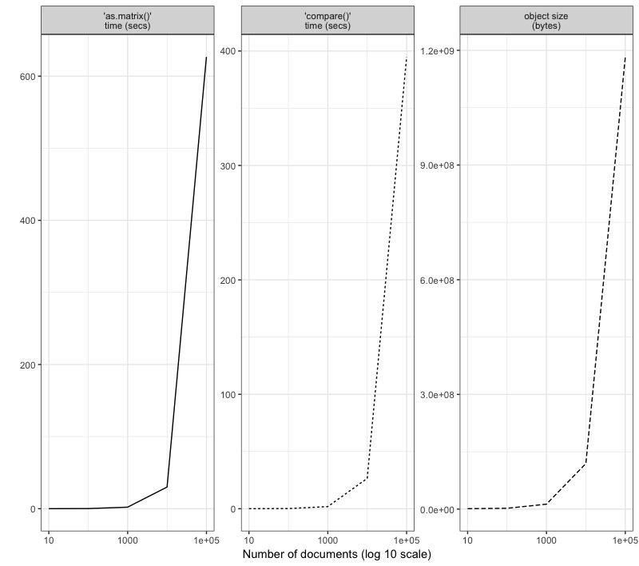

The goal of sfutils is to provide code and documentation on working with semantic fingerprints in R.
It does this by:
- porting the functionality of the retinasdk python module to R using the reticulate library
- implementing an object-oriented approach to working with semantic fingerprints in R.
- providing methods and functions that make it easy to compare fingerprints, convert fingerprints to sparse binary matrices, plot fingerprints etc.
Awesome! What do I need to do to install this package?
First things first: have you heard of the reticulate library? It provides a pretty straightforward API to run Python code in R and convert objects between these two languages. sfutils uses the reticulate package to communicate with Python.
This package uses Python 3.x and the retinasdk module. If you haven’t yet installed Python 3, go ahead and do so. Make sure to also install pip. Generally, I find it easiest to install the Anaconda distribution.
When you’ve installed Python and pip, execute the following in a terminal:
pip install retinasdkYou can then install the latest version of sfutils from GitHub using:
devtools::install_github("JasperHG90/sfutils")If you don’t have the devtools library installed, execute install.packages("devtools") first.
I’m all set! How do I get started?
Go ahead and load the package
suppressPackageStartupMessages(library(sfutils))The first thing to do is to set your API key, the server url and retina name as environment variables. If you’re using the free API, you can just set your key and forget about the other two options.
# Set credentials
Sys.setenv("CORTICAL_SERVER" = "http://api.cortical.io/rest") # Optional
Sys.setenv("CORTICAL_RETINA" = "en_associative") # Optional
Sys.setenv("CORTICAL_API_KEY" = "mykey")Alternatively, you can put these options in your global or local .Rprofile.
I’ve included several business descriptions that I retrieved from Thompson Reuters. I’ll be using those for the examples below.
data("company_descriptions")The following are core sfutils functions used to ‘fingerprint’ your documents, terms, semantic expressions or category filters:
-
do_fingerprint_document(): fingerprint a text -
do_fingerprint_term(): fingerprint a term -
do_fingerprint_expression(): fingerprint a semantic expression -
do_create_filter(): create a category filter
In the case of the company description data, we can send a list of documents in bulk to the API to be fingerprinted. This is more efficient than doing it one-by-one.
# Put descriptions into a list
txt_lst <- lapply(company_descriptions, function(x) x$desc)
# Create fingerprints
fps <- do_fingerprint_document(txt_lst)This returns an object of the ‘Collection’ class. A Collection is simply a grouping of objects with a semantic fingerprint (in our case texts). It behaves a lot like a list:
fps[[1]]## Document object.
##
## unique id: 7c392206-cd14-4db8-8fc5-1bf838da6a03
## type: document
## fingerprint: 984 positionsYou may, in fact, convert it to a list if you want
fps_lst <- as.list(fps)
# OR
fps_lst <- entries(fps)But there are some advantages to keeping the data in this format. For one, we can plot the intensity (normalized count) of each position
plot(fps)
Or we can convert the collection to a sparse binary matrix. In this representation, we have 16384 columns (as many as there are positions in the retina) and \(n\) rows (where n equals the number of entries). If a position is present in the document, it has a value of 1. Else, it has a value of 0.
fps_binmat <- as.matrix(fps)
fps_binmat[1:5, 1:5]## 5 x 5 sparse Matrix of class "dgCMatrix"
## p1 p2 p3 p4 p5
## 7c392206-cd14-4db8-8fc5-1bf838da6a03 . . . . .
## a4cabe2c-49af-488f-a8a3-0bef1c245807 . . . . .
## 915b5c96-a1d9-4ef3-a77b-7bbd182d0f62 . . . . .
## 9867b856-b2dc-48f8-bf9b-f2b6d1c3b21f . . . 1 .
## 952dc6ef-bfed-475b-93c7-cbf78703e325 1 1 1 1 .This representation is especially useful if you want to compare a bunch of fingerprints to another fingerprint. For example: we want to compare all company descriptions to the fingerprint of the term ‘software’, ‘finance’, and ‘food’:
# Fingerprint terms
trm_soft <- do_fingerprint_term("software")
trm_fin <- do_fingerprint_term("finance")
trm_cons <- do_fingerprint_term("food")
# Compare descriptions to these fingerprints
cmp_soft <- do_compare(fps_binmat, trm_soft)
cmp_fin <- do_compare(fps_binmat, trm_fin)
cmp_cons <- do_compare(fps_binmat, trm_cons)
# Combine the results
cmp_comb <- do.call(cbind.data.frame, list(cmp_soft, cmp_fin, cmp_cons))
# Change the names of the matrix
rownames(cmp_comb) <- names(company_descriptions)
colnames(cmp_comb) <- c("software", "finance", "food")
cmp_comb## software finance food
## unilever 0.13025585 0.1548989 0.3150783
## ahold 0.07040857 0.1425774 0.3520428
## ing 0.15313864 0.3960482 0.1777816
## Alphabet 0.36260413 0.1936236 0.1636999
## apple 0.52982448 0.1531386 0.1460978
## jpmorgan 0.20418485 0.4206912 0.1742612As we can see, this comparison works well, even though we just use one term. We could make a better comparison by creating a category filter.
# Create a category filter using wikipedia snippets
# https://en.wikipedia.org/wiki/Finance
# https://en.wikipedia.org/wiki/Information_technology
# https://en.wikipedia.org/wiki/Final_good
filt <- do_create_filter(
"finance",
positive = c("Finance is a field that deals with the study of investments. It includes the dynamics of assets and liabilities over time under conditions of different degrees of uncertainties and risks. Finance can also be defined as the science of money management. Market participants aim to price assets based on their risk level, fundamental value, and their expected rate of return. Finance can be broken into three sub-categories: public finance, corporate finance and personal finance.",
"Corporate finance deals with the sources funding and the capital structure of corporations, the actions that managers take to increase the value of the firm to the shareholders, and the tools and analysis used to allocate financial resources. Although it is in principle different from managerial finance which studies the financial management of all firms, rather than corporations alone, the main concepts in the study of corporate finance are applicable to the financial problems of all kinds of firms. "),
negative = c("Information technology (IT) is the use of computers to store, retrieve, transmit, and manipulate data, or information, often in the context of a business or other enterprise. IT is considered to be a subset of information and communications technology (ICT).",
"In economics, any commodity which is produced and subsequently consumed by the consumer, to satisfy his current wants or needs, is a consumer good or final good. Consumer goods are goods that are ultimately consumed rather than used in the production of another good. For example, a microwave oven or a bicycle which is sold to a consumer is a final good or consumer good, whereas the components which are sold to be used in those goods are called intermediate goods. For example, textiles or transistors which can be used to make some further goods.")
)
# Compare
cmp <- do_compare(fps_binmat, filt)
rownames(cmp) <- names(company_descriptions)
colnames(cmp) <- "filter"
cmp## filter
## unilever 0.1954150
## ahold 0.1539955
## ing 0.3589688
## Alphabet 0.2060354
## apple 0.1529335
## jpmorgan 0.3717133This does what we expect; ING and JPMorgan get a high similarity score (>0.3) and the others have a lower score.
Alternatively, we might be interested in comparing the company descriptions to one another:
# Create an empty matrix
m <- matrix(0, ncol = 6, nrow = 6)
# Populate matrix. Use Euclidean distance
for(i in 1:6) {
m[,i] <- do_compare(fps_binmat, fps[[i]],
method = "euclid")[,1]
}
colnames(m) <- names(company_descriptions)
rownames(m) <- names(company_descriptions)
print(m)## unilever ahold ing Alphabet apple jpmorgan
## unilever 0.00000 37.68289 35.83295 36.74235 36.82391 36.74235
## ahold 37.68289 0.00000 36.98648 38.31449 39.03844 38.23611
## ing 35.83295 36.98648 0.00000 34.89986 36.27671 28.56571
## Alphabet 36.74235 38.31449 34.89986 0.00000 30.52868 34.69870
## apple 36.82391 39.03844 36.27671 30.52868 0.00000 36.00000
## jpmorgan 36.74235 38.23611 28.56571 34.69870 36.00000 0.00000Then we can use e.g. hierarchical clustering to cluster the companies based on their descriptions.
# Convert to a distance matrix
fps_dist <- as.dist(m)
# Create clusters
clusters <- hclust(fps_dist, method = "ward.D2")
# Plot
plot(clusters)
You can use the FactoMineR package to reduce the number of dimensions. This is useful especially when you want to compare many documents, because it reduces the number of dimensions (16384 in our case, or the number of positions) to just \(k\) dimensions, where \(k\) is the number of principal components we want to use.
library(FactoMineR)
# Run PCA
fps_reduced <- PCA(as.matrix(fps_binmat),
ncp = ncol(fps_binmat),
graph = FALSE)
# Predict
pred <- predict(fps_reduced,
as.matrix(fps_binmat))$coord
# Reshape
library(dplyr)
pred_resh <- as_data_frame(pred) %>%
mutate(company = names(company_descriptions)) %>%
select(company, Dim.1, Dim.2)
# Plot
library(ggplot2)
ggplot(pred_resh, aes(x=Dim.1, y=Dim.2, color = company)) +
geom_point(size = 2) +
theme_bw()
This result is quite interesting. The companies’ distance to each other seems to be influenced by how similar their business descriptions are.
# Cluster companies using only two dimensions
pred_resh$company <- NULL
pred_resh <- as.matrix(pred_resh)
rownames(pred_resh) <- names(company_descriptions)
x <- dist(pred_resh)
# Cluster
clust <- hclust(x)
plot(clust)
For more examples, check out the vignettes.
What’s the performance like?
That depends on your use case. If you want to work with >10K documents and need to use this in a production environment, then performance probably isn’t great. If you don’t care about execution times that much then you can easily use this package for 100K+ documents. Check the graph below for an indication of performance.

as.matrix() takes roughly 10 minutes for 100.000 documents and takes up 1.1GB of space comparing a document to 100.000 documents takes roughly 6 minutes. By comparison, this operation takes +- 25 seconds on a collection of 10.000 documents (size is +-123MB).